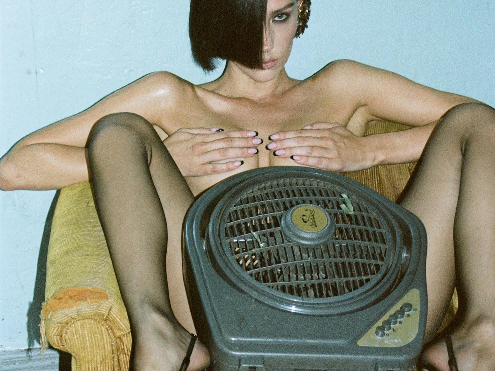
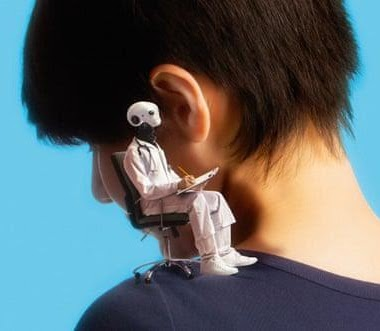

I really liked this excerpt, it's very interesting! Talking about fetishes openly is regularly regarded as taboo, and that's why I do think there needs to be more talk about them. While the concept of a robot with a foot fetish does initially come across as overly perverse and absurd, with generally a large intended comedic effect, I do think serious things can and should be said with it!
Like
Solve et Coagula
,
I'd personally approach this concept of robots with fetishes from an angle of appreciation and without shame. To make this more apparent, I'd step away from the frequently memed foot fetish, and go into a more abstracted fetish. Having a robot focus on a random 'fetish' like the palm of a hand, specifically red clothes, or the wenis (no not that one), would remove itself from the comedic purpose and ask the concrete questions directly. Is this a part of my body that should be hidden just because a robot is weird about it? Is there a specific reason for this robot to be interested in this specifically? What can it possibly get out of this? Is there a difference between a foot fetish and a wenis fetish?

Another angle I think would be more on the funnier side is a highly critical fetishist. Instead of it blindly perving out over every foot, it could highlight the fact that fetishists still do have preferences and likely don't freak out over every single foot. Having the robot rate the feet it sees like
RateMyFeet,
or having it go 'ah, nevermind' when a sock is taken off, can give it more personality. Additionally, it might raise questions about others' and your own view on your body. Am I disappointed if a feet fetishist turns around at my reveal? Do I get self-conscious about them, even if I've never felt like that before? If I get a high rating, does that mean I should feel pride or shame? Can I find enjoyment in, or conversely, forget about what, someone else thinks about me?
Anyway it doesn't have to be as serious as I like to frame it. Nothing wrong with a robot that just likes feet.

If I had the balls to make such a robot, I'd like to make one building off my first proposal, an absurd fetish. Something like an ear fetish, where it politely asks you to turn your head, move your hair to the side, or let it have a closer look, much like proposed in the original blog. Placing it closer to someone's face, having it not be on the ground below you, and having it be very hard to see because of its location and goals, are some things I think would highlight the experience more.
I think the interesting part of this experience would be the contrast between something that is inherently quite absurd, and the potentially uncomfortable intimacy of the interaction. While the robot's intentions might be relatively harmless, having something constantly request to inspect a part of your body could make you surprisingly self-conscious. I'd like to explore that boundary between finding something funny, feeling uncomfortable, and eventually becoming accustomed to being appreciated in an unusual way.